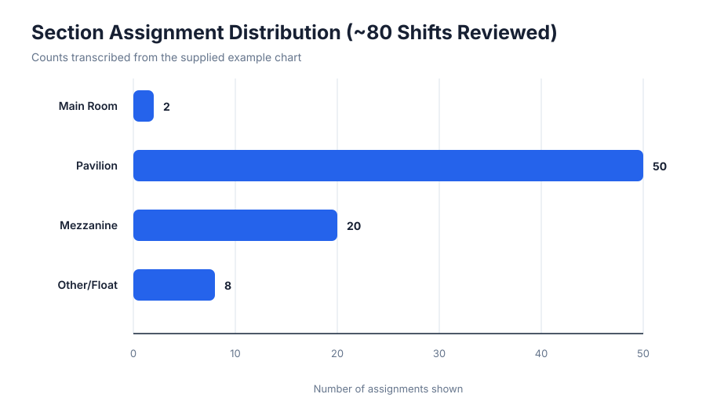
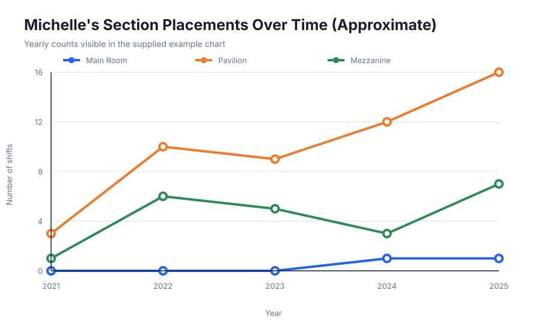
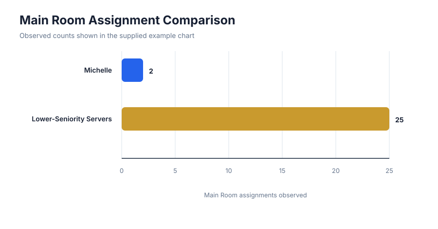

80section assignments shown in distribution chart
2021–2025period shown in Michelle's timeline
3clear staffing views produced
Section mix
Simple category comparison with exact values displayed.

Placement history
Approximate yearly placement counts for Michelle, copied from the supplied visual.

Main Room comparison
Direct comparison using names and values exactly as shown in the supplied chart.

Full project workflow
Proposed production process once original records are available.
1. CollectOrganize paper scans and PDFs by date or reporting period.
2. ExtractCapture names, dates, roles, rooms, shifts, and other agreed fields.
3. VerifyFlag unclear entries and check extracted records against source pages.
4. VisualizeDeliver clean tables, summaries, charts, and reusable output files.
Values used in this demo
Visible sample values only. Downloadable result tables are included in this repository.
| View | Category | Value |
|---|---|---|
| Distribution | Main Room | 2 |
| Distribution | Pavilion | 50 |
| Distribution | Mezzanine | 20 |
| Distribution | Other/Float | 8 |
| Main Room comparison | Michelle | 2 |
| Main Room comparison | Lower-Seniority Servers | 25 |